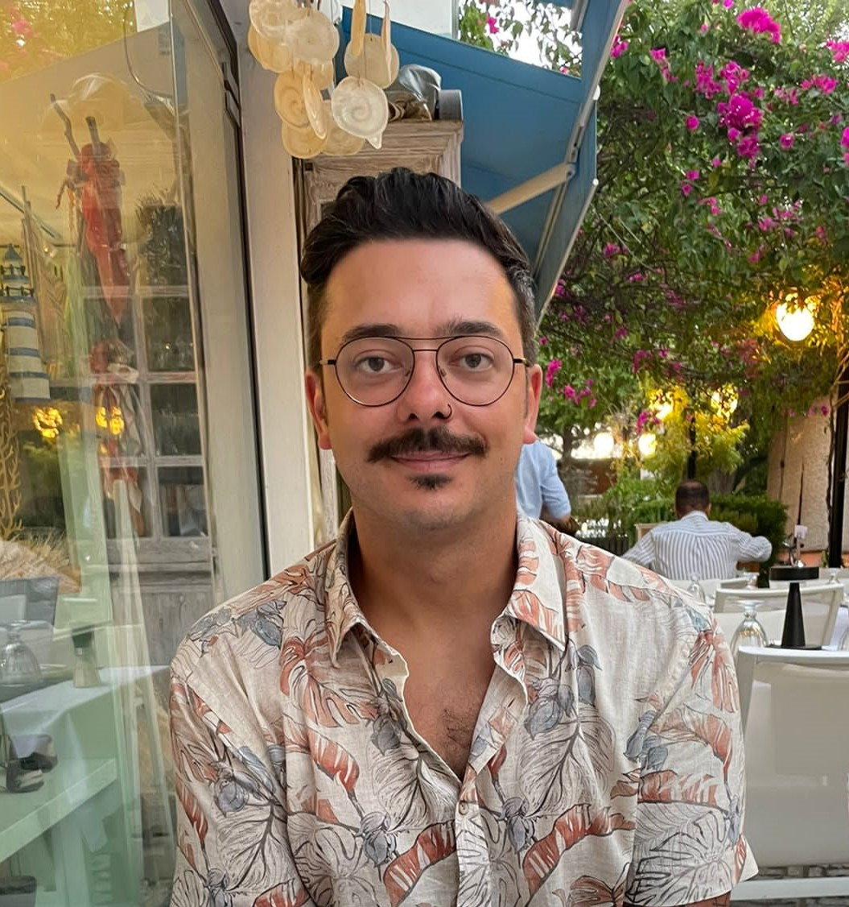

Dino Divljanovic

Summary
I'm Dino, a passionate Web Enthusiast from Austria, eager to embark on an exciting journey in the world of Web Development.
Education
1999 - 2003: Elementary School
2003 - 2007: Federal Secondary School
2007 - 2008: Secondary School
2008 - 2012: Technical School
2012: Apprenticeship Examination
Work Experience
Electrical Installation Technician
- 2008 - 2012: Apprenticeship as Electrical Installation Technician with a focus on Process Control and Bus Technology
- 2012 - 2013: Electrical Installation Technician
Electrical Measurement and Control Technician
- 2013 - 2014: Electrical Measurement and Control Technician at Chemiepark Linz
- 2014 - 2015: Site Supervisor as Measurement and Control Technician
Technical Employee
- 2015 - 2016: Technical Sales Employee
- 2017 - 2018: Technical Employee in Facility Management
EMC Technician in Automation
- 2018 - 2020: Automation Software Engineer in at Chemiepark Linz
- 2020 - today: EMC Technician on Drilling Rigs
Skills
Languages
Microsoft Office Suite
ERP-Programs
Process Control Systems
- Honeywell Experion PCS
- Siemens PCS
Awards and Certifications
Explosion Protection Certificates
Honeywell Safety Manager
Also see: